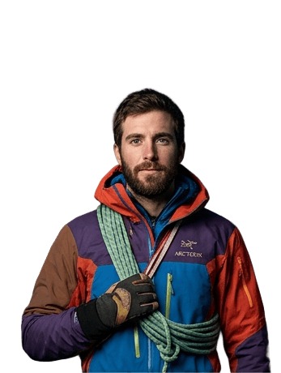
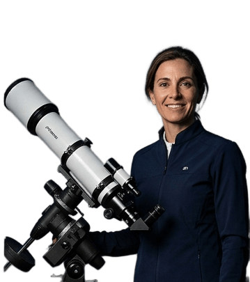
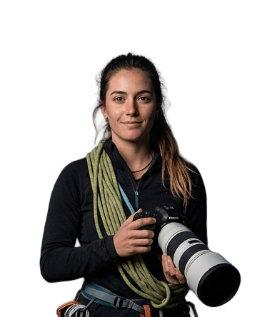
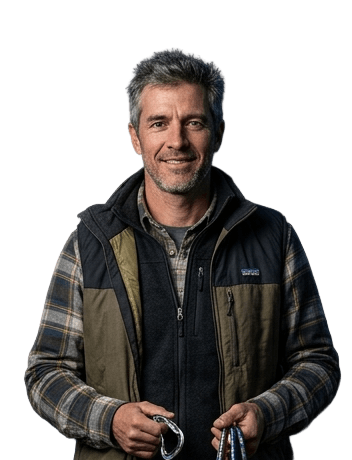

En Cúspides nos enfocamos en montañistas y escaladores experimentados para desafiar sus límites con una propuesta inédita: fusionar la escalada técnica en roca con la precisión de la astronomía de campo. Más que enseñarte a escalar, te guiamos para transformar tus noches en la pared en lienzos cósmicos, descubriendo una nueva dimensión táctica y estética bajo las estrellas más limpias del hemisferio sur en un aprendizaje avanzado e inolvidable.
En Cúspides nos enfocamos en montañistas y escaladores experimentados para desafiar sus límites con una propuesta inédita: fusionar la escalada técnica en roca con la precisión de la astronomía de campo.

Capturas de nuestros alumnos y guías en las paredes verticales de la Patagonia bajo ventanas astronómicas óptimas.
.png)
.png)
.png)
.png)
.png)
.png)
.png)
.png)
Diseñado exclusivamente para expertos en trekking y escalada clásica. Cuatro módulos de rendimiento físico avanzado, astrofotografía y ascensos verticales en roca bajo la oscuridad absoluta de la Patagonia.
"Fue una travesía alucinante y físicamente demoledora que transformó mi visión del montañismo..."


Praparación física para resistir las condiciones extremas de la oscuridad absoluta.

Corto curso teórico sobre las constelaciones y los cuerpos celestes que se puden observar desde la Patagonia.

Curso práctico sobre técnicas de captura de imágenes del cielo nocturno en entornos de alta montaña.

Experiencia inmersiva avanzada en la observación del cielo nocturno en entornos de alta montaña, con guía especializada.
Saber MásEspecialistas de alta montaña, astrónomos y fotógrafos profesionales comprometidos con tu seguridad y tu aprendizaje en cada cumbre.

Instructor de Escalada & Rescate Técnico

Especialista en Astrofísica & Logística Estelar

Fotógrafa de Expedición & Paisaje Nocturno

Coordinador de Ruta & Logística de Montaña
Iniciá tu proceso de validación de experiencia. Las plazas para la expedición de 3 noches son estrictamente limitadas por cuestiones de seguridad en pared.